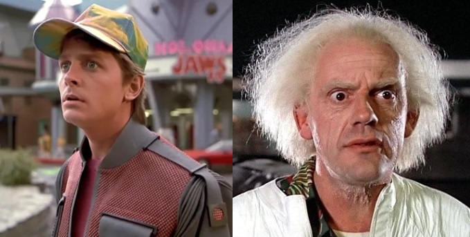

Heu Réka
★★★★★
Egész életemben Beatles-rajongó voltam, de a születési évem miatt soha nem láthattam őket élőben. Az IdőTurisztnak hála valóra vált az álmom!
- Réka a 60-as évekbeli vakációja után.
★★★★★
Egész életemben Beatles-rajongó voltam, de a születési évem miatt soha nem láthattam őket élőben. Az IdőTurisztnak hála valóra vált az álmom!
- Réka a 60-as évekbeli vakációja után.
★★★★★
Imádom a történelmet!
- Rudolf beszámolója a legutóbbi időutazásáról.
Azt mondják, kockázat nélkül nincs siker. Amikor elindultunk az időutazás útján, senki nem volt előttünk, aki a kezünket fogja (a jövőbeli énünkön kívül). Professzionális csapatunk két főből áll; Dr. Barna Emett, az évszázad innovátora, és Meklégy Márton, a tesztalany személyében. Célunk az IdőTurisztnál az időutazás technológiának megosztása a mindennapi emberrel.
